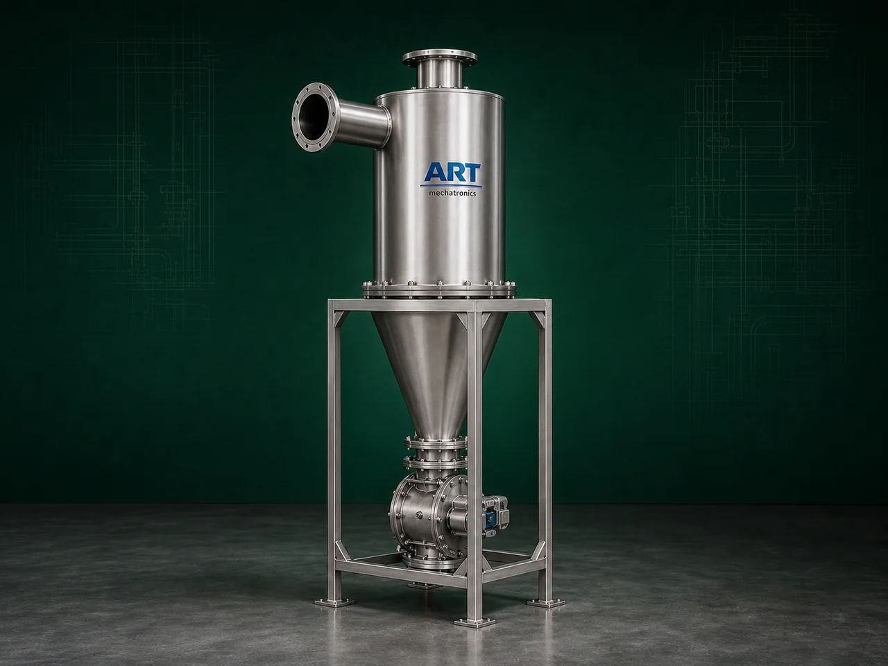

Cyclone Separator Machine (Industrial Dust & Fine Particle Air Separation System)
A Cyclone Separator Machine, also known as an Industrial Cyclone Dust Separator or Cyclonic Air Separation System, is a highly efficient industrial equipment designed for separating dust, powder, fine particles, granules, and airborne impurities from air streams or pneumatic conveying systems using centrifugal force.

About the Cyclone Separator
The machine operates on the principle of:
- Cyclonic airflow
- Centrifugal separation
- Air velocity control
- Gravity-based particle discharge
where dust-laden air enters the cyclone chamber at high speed, creating a vortex motion that separates heavier particles from the air stream.
Cyclone separators are widely used in industries such as:
Food processing
Pharmaceuticals
Chemicals
Grain processing
Spice industries
Cement plants
Minerals
Woodworking
Recycling industries
where dust control, powder recovery, and air-material separation are essential.
The machine is highly suitable for:
- Dust separation
- Powder recovery
- Pneumatic conveying systems
- Fine particle collection
- Pre-filtration systems
- Air pollution control systems
ART Mechatronics offers high-performance cyclone separator machines, engineered for efficient dust handling, continuous industrial operation, energy-efficient performance, and reliable long-term operation.
Working Principle of Cyclone Separator Machine
Dust-contaminated air enters cyclone chamber tangentially at high velocity
Air rotates rapidly inside cyclone body High-speed vortex motion generates centrifugal force
Heavy particles move toward outer wall of cyclone
Dust and powder particles lose velocity and fall downward due to gravity
Clean air moves upward through central outlet pipe
Separated dust and particles collected in bottom hopper or collection chamber
Valuable powders and fine materials can be recovered and reused
Types of Cyclone Separator Machines
- 1. Standard Cyclone Separator
General-purpose industrial dust separation applications.
- 2. High Efficiency Cyclone Separator
Designed for:
- Fine particle separation
- Improved dust collection efficiency
- 3. Multi Cyclone Separator System
Uses multiple cyclone units for: ✔ High-capacity industrial dust handling
- 4. Powder Recovery Cyclone Separator
Suitable for: ✔ Fine powder collection and recovery systems
- 5. Pneumatic Conveying Cyclone Separator
Integrated with:
- Pneumatic conveying systems
- Material transfer lines
- 6. Heavy Duty Industrial Cyclone Separator
Designed for:
- Cement plants
- Mineral industries
- Large-scale industrial operations
Industries Using Cyclone Separator Machine
🍃 Food Processing Industry Flour and spice dust separation 💊 Pharmaceutical Industry Powder recovery and dust control ⚗️ Chemical Industry Chemical powder separation 🌾 Grain Processing Industry Grain dust handling systems 🌶️ Spice Industry Masala powder recovery 🪵 Woodworking Industry Sawdust collection and separation 🏗️ Cement Industry Cement dust handling and recovery ⛏️ Mineral Industry Fine mineral particle separation
Features & Advantages
- Efficient dust and powder separation
- No moving internal parts
- Low maintenance requirement
- Continuous industrial operation
- Energy-efficient performance
- Heavy-duty industrial construction
- Reduces airborne dust pollution
- Suitable for powder recovery applications
- Improves workplace air quality
Technical Highlights
Separation Technology: Cyclonic centrifugal separation Construction: Stainless Steel / Mild Steel Dust Collection: Hopper collection system Rotary airlock integration Integration: Blower system Pneumatic conveying systems Dust collector systems Operation: Manual Semi-automatic Fully automatic
Turnkey Cyclone Separation Solutions
ART Mechatronics offers: Complete cyclone separator systems Pneumatic conveying integration Dust collection and filtration systems Rotary airlock valve integration Installation & commissioning After-sales service & AMC
Why Choose Art Mechatronics
Expertise in industrial dust handling and separation systems Customized solutions for multiple industries High-performance and durable cyclone construction Energy-efficient and reliable industrial designs Proven industrial performance across sectors
Applications
Food Processing Plants Pharmaceutical Manufacturing Units Chemical Processing Industries Grain & Spice Processing Plants Cement & Mineral Industries Woodworking Facilities
Industries that use the Cyclone Separator
Related Cleaning, Sorting & Grading machines
Get pricing & specs for the Cyclone Separator
Share the product, target capacity, current process and plant location. These details help our engineers discuss the right machine or line configuration.
One partner, from design to start-up
ART Mechatronics designs, manufactures, installs and commissions your Cyclone Separator solution with regional presence in India, UAE and Thailand.